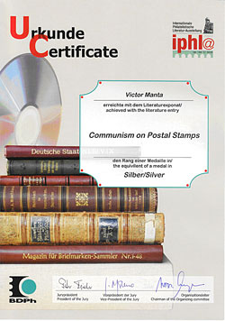

|
|
WAS IPHLA - 2012 THE LAST MAJOR WEBSITES COMPETITION?
Victor Manta, PWO, AIJP
It would be a mistake to attempt to evaluate Internet literature
against exactly the same benchmarks as printed literature.
Charles J. PetersonIntroduction
The subject of this article is the IPHLA 2012, definitely the largest philatelic literature exhibition of the last decades. My account relates strictly to the websites competition part of the IPHLA 2012 and should in no case be extended to the whole competition.
Well, it was my fourth participation in a competition of this level since 1999, but the reason to participate in this one was somewhat different. Because no competitions were organized after 2002, the thrill was largely gone, and what remained of it led me to follow the evolution of the participation of philatelic webmasters, the work of the organizers and, especially, that of the jury.
By way of full disclosure, I must explain that my comments reflect in part my own experience as a contest participant. While the possibility of bias on my part is thus to some extent unavoidable, being inside the contest is also the best way to gather information on what goes on, and so I hope that you will indulge my decision to share my observations.
The sources of this article and its FIP non-sources
An important source of information for this article was the IPHLA 2012 website, found at http://www.iphla.de/10.asp?l=e . One of the basic documents, published on this site, is named: Special regulations for the judging of philatelic and postal history literature. The shortcomings of these regulations were partly discussed in my previous article: A no nonsense contribution to the evaluation of philatelic websites, available under the link ( http://www.pwmo.org/IPHLA/12-evaluation-websites.htm )
In this article I will discuss, by using real examples, some damaging consequences of these shortcomings.
In the research for this article, the interviews with Mr. Wolfgang Maassen , the Chairman of the OC of IPHLA 2012 and the President of AIJP, and with Mr. Peter Fischer , the President of the Jury of IPHLA 2012, proved to be very useful. I would like to thank them both for their contribution to the large exhibition and for answering my questions, which are published in the Appendix.
Unfortunately, I have to emphasize the lack of collaboration and transparency manifested by Mr. Francis Kiddle , who is a FIP (International Philatelic Federation) accredited judge and is currently Chairman of the FIP Revenue Commission. He was the only member of the jury who had previous experience with the judging of philatelic websites, being the organizer of some FIP websites evaluations (2000 - 2002). These competitions were aborted by the FIP after Mr. Kiddle declared that philatelic websites cannot be judged, being too complex and having content that is too variable. It was just a variation of the old too many notes argument, used in the distant past against Amadeus
Mr. Kiddle hasn't changed since 1999, when I met him for the first time, online, in connection with the mentioned FIP Philatelic Websites Evaluations. His message, sent to me on Nov. 19, 2012, is characteristic: Dear Victor, I need to see the questions before I commite to answer them. Sorry, but sometimes judges get a hard time! Regards, Francis (Team Leader team 3).
I sent him my questions two month ago (found in the Appendix), very similar to those that I asked Mr. Maassen and Mr. Fischer, and I'm still awaiting answers to them. I don't know what about these questions took Mr. Kiddle out of his comfort zone. It could be the recognition of the fact that he was wrong between 2003 - 2012 in what concerns the judging of philatelic websites (if he wasn't wrong in the past, then why was he judging them at IPHLA 2012?) or his lack of desire to confess that FIP continues to have no intention to consider philatelic websites as a legitimate part of the philatelic movement.
Another very important member of the jury whom I contacted was Mr. Antony B. Virvilis , IPHLA 2012 Philatelic Judge and Chairman of the FIP Philatelic Literature Commission. His presence as a jury member at IPHLA 2012 was important due to his high position in the most relevant FIP commission for philatelic websites. I sent to him my questions, which are very similar to those that I asked Mr. Kiddle, but Mr. Virvilis hasn't reacted at all. Actually, it is not for the first time that this high FIP official ignores the philatelic webmasters movement and philatelic journalism. Like for Mr. Kiddle, I interpret his silence as another sign that FIP has no intention to reconsider its position in what concerns the philatelic websites movement.
This lack of responses from FIP leaders explains my skepticism concerning the future of websites competitions, an area in which the IPHLA 2012 event seems to be a notable but most likely futureless experiment.
Note: the five consecutive images are snapshots taken from my website Communism on Postal Stamps that I presented at IPHLA 2012. I inserted them to enliven this webpage. Please click on the images for zooming.
The participation in the IPHLA 2012 websites competition, Group 3B
There were many competition groups and subgroups in the chapter 3. Groups within the literature competitive class, as defined in the basic document: Special regulations for the judging of philatelic and postal history literature. I will discuss further only Group 3B, in which I participated and that is meant for: Websites, which serve to promote philately and deal with organizational matters in the field of philately and postal history, their object being documentation. As I learned later, it should be understood as Websites, which serve to promote philately as well as those that deal with organizational matters in the field of philately and postal history, their object being documentation.
Because basically any website can be considered as serving to promote philately, this leaves a largely open space for cramming into this subgroup a large variety of websites. 38 websites were present in this group, numbered from 3.B.1 to 3B38. Of these, 19 (50%) were websites of philatelic societies. Largely underrepresented, when compared to their large number, were the websites dedicated to topical philately: only 5 (13%). In the Appendix, the Organizer, Mr. Maassen, gives an explanation about this uneven distribution when writing that: Preliminary publicity was primarily aimed at associations in Europe and around the world in the hope that on their own websites and in their printed media they might pass the provided information on to collectors. As far as I could observe, this was unfortunately not the case everywhere.
May I note here that the Philatelic Webmasters Organization (PWO) brought some very valuable competitors, by spreading information on the Internet, both on its own website and in the major philatelic newsgroups. Obviously, all this was not enough. The list of PWO participants can be found here: http://www.pwmo.org/IPHLA/pwo-participation.htm
A rather peculiar presence in this group was the website of honorable distinguished auction house, on which I could not find, no matter how hard I tried, notable articles pertaining to philately, but at best descriptions of successfully sold lots. To my surprise, the lack of researched philatelic content did not prevent this site from obtaining 82 points and a Grand Vermeil award. Of course, it is not the exhibitor himself who bears responsibility for this anomaly, but rather the often hodge-podge regulations, the myopia of some jurors, or both.
The judging - As in theory, so in practice
A step back when compared with the practice at the old FIP Website Competitions was the full-scale mixing of websites made by professionals with those created by amateurs. It is therefore no wonder that an official site, that of the famous Royal Philatelic Society, largely won the 3B category. It is obvious that the amateur philatelic webmasters have neither the knowledge nor the resources to compete with those highly skilled professionals, and they will never have them. For this reason, such an imbalanced game looks highly unfair to me.
I will cite here an answer from Mr. Fischer (see the Appendix): In view of the technical parameters, judging of philatelic websites is considerably different from judging printed media. In my opinion, more parameters should actually be considered. Just as an example, an author who prints his work usually gets some precious guidance from editors, publishers, etc. The individual philatelic webmaster is, by definition, rather alone in front of his computer.
Here is the place to honor the memory and the wisdom of the departed Chief of the 1999 Evaluation Panel, Charles J. Peterson, and to remember his comments on the evaluation of philatelic websites, which are published here: http://fipliterature.org/cjpletter.html . Charles Peterson presented in this document, a long time ago, the results of his deep analysis, based on about 1,800 (!) philatelic websites that he had visited. After having reread this document, I reached the conclusion that many things have already been analyzed, and it is not necessary to reinvent the wheel about every 15 years, taking the risk of transforming it into a thorny object.
Mr. Fischer expressed an interesting concern when asserting that: One problem is that websites differ considerably as to their nature and that the individual sites have aims quite different one from another. Here I cannot abstain from noticing, with a satisfaction that I do not try to hide, that Mr. Fischer's affirmation does nothing but emphasize the entire variety, strength and attractiveness of philatelic websites. It is up to the jurors to adapt to this already established, large and continually growing Internet-based philatelic world, and not vice-versa.
Back to Charles Peterson, he wrote: It would be a mistake to attempt to evaluate Internet literature against exactly the same benchmarks as printed literature. Compare this with what Mr. Maassen writes 14 years later in his interview: For this reason I do not see any problem in applying to websites a procedure which over the years has proved effective. In any case, the regulations purposely applied at IPHLA worked that way, and entries were judged by their contents and by technical criteria.
Based on Charles Peterson's assertions and on my personal experience, I am convinced that modern jurors have to get rid of their professional deformations and develop a new understanding and sensitivity to newer, freer forms of expression, brought to them by the philatelic Internet. Unfortunately, it is not just by using a computer that they will achieve this goal. How about their creating philatelic websites and then competing with us or, even better, how about integrating into future jury teams some philatelic webmasters who have proven themselves over the years?
A question that repeated itself in my correspondence with webmasters (PWO members) who participated in IPHLA 2012 was how they could obtain information from the jury to improve their websites. In the old days of the FIP Websites Evaluations, the jury was required to send to each participant, by e-mail (!), a so-called Critique. We learn which was the practice at IPHLA 2012 directly from Mr. Fischer: Questions about how to improve one's exhibit can as a rule best be answered in a direct discussion with the juror, and in Germany each exhibitor is given this opportunity at the end of the exhibition.
I understand from this quotation that only those who were physically present at the final festivities of the exhibition could get the chance to discuss their exhibits with the jurors, which is a big step back when compared to what was decided and practiced between 1999 2002 by FIP. Charles Peterson knew, of course, that just a few website authors would be present at the final ceremonies, and for this reason he foresaw the obvious, i.e. how to practically help those who are not present in improving their websites. Just as an aside, I wonder how a participant in Mainz could learn, in the bustle of a big exhibition, which of the 11 jurors evaluated his precious exhibit, which was one of several hundreds, and how the jurors and the participants could seriously discuss it. On the IPHLA 2012 site, I could find neither the apparently confidential information about who judged what nor at least a list of the e-mail addresses of the jurors (for privacy reasons something like: xyz@iphla.de).
The certificates were signed by the same group of leading jurors and it seems hopeless to find out now who judged what. The best that I could get from Mr. Fisher was : All jurors had to judge printed as well as digital media, which surely wasn't an easy task for these jurors and also likely diluted their responsibility toward the competitors. As far as I could see, not only had the jury members previously not participated with exhibits in website competitions but they also did not have a single website to exhibit in the Jury Class, reserved to them exclusively (see the document juryklasse-neu.pdf on the IPHLA 2012 website) .
Anyway, the question of why Mr. Fischer did not want or could not point me to the judge(s) who dealt with my site remains open, this after I asked him two simple information regarding the evaluation of my site.
The IPHLA 2012 rules also cover a spectrum from tenuous to unreasonable, and the judges who apply them display many problems as well. I asked Mr. Fischer an obvious question: As an example, I sent to you an excerpt from my certificate, for the Exhibit No. 3.B.21. From the form you can read (excerpt): 2. Originality, significance, depth of research / etc.: 20 from 40 points. may I ask you to explain me what/how should I do better .
This is Mr. Fischer's answer, who instead of a clear cut answer limits itself to cite a rule: # 2. By the choice of his theme, the contents, the author has taken a first decision regarding the criteria. Is the theme really new, and has it got a more or less far-reaching importance for philately and postal history as a whole?
To understand this better, let us see how all this applies to my site. My theme, Communism on Postal Stamps, was new in 2003, when I created my site (and I sent it in the shortly after the aborted FIP Sites Evaluations), and it is far from becoming trivial these days. For a very long time, communist regimes reigned over immense parts of the world. The communism theme appeared on many stamps, issued during many decades, and the issuers were often using misleading propaganda tricks to hide their real intentions. There is still a lot of research to do in this direction, judging from what analysts and historians have uncovered since the fall of communism in Europe . Which could then be the problem with my choice of theme, which led to the fact that my site received only a half of all points (20 out of 40) under the scoring caption 2.?
The next tip of Mr. Fischer, who follows the rules, is rather baffling: The cancellations of a small town e.g. are less important than the cancellations of a whole country etc. Should I infer from this, for example, that a potential website dedicated to the cancellations of a masterpiece of philately, the Basel Dove stamp, which circulated on the small territory of a canton, is less valuable per se than, let us say, a website that deals with some modern cancellations used in Germany , now the largest country in Western Europe ? Even accepting this dubious rule, because communism was so widespread worldwide, my choice of theme cannot be the reason for the drastic downgrading of my website. Which could then be the reason and who will ever enlighten me about it?
Other obvious questions arise quickly, like: where can I learn what is considered a far-reaching theme for philately, or which was that far-reaching theme for philately that allowed an auction house to collect 82 points, as compared to my 65?
Please notice again that these are not questions asked by a frustrated webmaster that is unhappy with his score, but they are coming from an AIJP affiliated author, who is trying to extract for the future some matters of principle, by asking key questions, bringing real-life examples and making relevant comparisons.
Organization, rewards and future
The final results of the competition were published on the IHPLA 2012 site in a PDF file. While this is not a disadvantage for classical literature, it is largely preferable that the awarded websites and the links to them appear on a webpage (as Charles Peterson realized and did, back in 1999). Strangely enough, for reasons that remain a mystery, the link to my website is missing anyway.
A clear sign that the IHPLA 2012 site wasn't used efficiently enough to communicate with the participants was that at some point, the organizer was overloaded by participants with countless e-mails.
Nevertheless, IHPLA 2012 will remain an important success in philatelic history, which is why I would like to finish this long article by underscoring some of exhibition's most positive aspects.
Membership in an official philatelic organization wasn't a requirement at IPHLA 2012. The participation fee, set high by Internet standards , could at least be easily paid, for example by PayPal.
And last but not least, please admire below an example of a Certificate that was prepared and sent by the organizers. I received a medal too, but that is rather difficult to show. It is anyway more and they look better than the web icons awards with which FIP rewarded us in the past.

We should appreciate at its just value the encouraging fact that it is for the first time in the long history of philately that philatelic webmasters were treated on equal footing with other exhibitors at a major philatelic competition.
Because everything can be improved, and because hope dies last, let us hope that a new websites competition will follow in the near future. And why not, let us also hope that at the next IPHLA, the obsolete CD shown on the certificate's background will be replaced by an image that suggests the power, the usefulness, and the frequent presence of the Internet in our philatelic activities.
I can only admire the unabated optimism of Mr. Maassen (who is one of the most significant and most consistent supporters of the philatelic websites movement), which he expressed as follows: The more positive, useful and transferable experience is gathered on the national and continental level, the sooner change will take place there, even if it may still take years. But what do a few years mean in view of the 150 years of philatelic literature that we celebrated in Mainz ? I respectfully remind him, who is roughly my age, Keynes's witticism that in the long run we are all dead, which also explains the title of this article.
Fortunately, philatelic webmastering continues its march forward, without looking back at those who are still unable to appreciate its overwhelming presence and its considerable achievements, and that it is here to stay.
Note: this article first appeared online, on the Philatelic Webmasters Organization website: www.pwmo.org . Mr. Victor Manta is the President and the Founder of this organization.
VM / Feb.10, 2013. Lower Manhattan, New York City, USA
In the Appendix, which I publish on a separate page, you can find the interviews with Mr. Wolfgang Maassen, the Chairman of the OC of IPHLA 2012 and the President of AIJP, and with Mr. Peter Fischer, the President of the Jury of IPHLA 2012.
| Created:
Feb. 10, 2013. Revised: Feb. 10, 2013. Copyright © 2013 by PWO and by Victor Manta, Switzerland All rights reserved worldwide. |
|